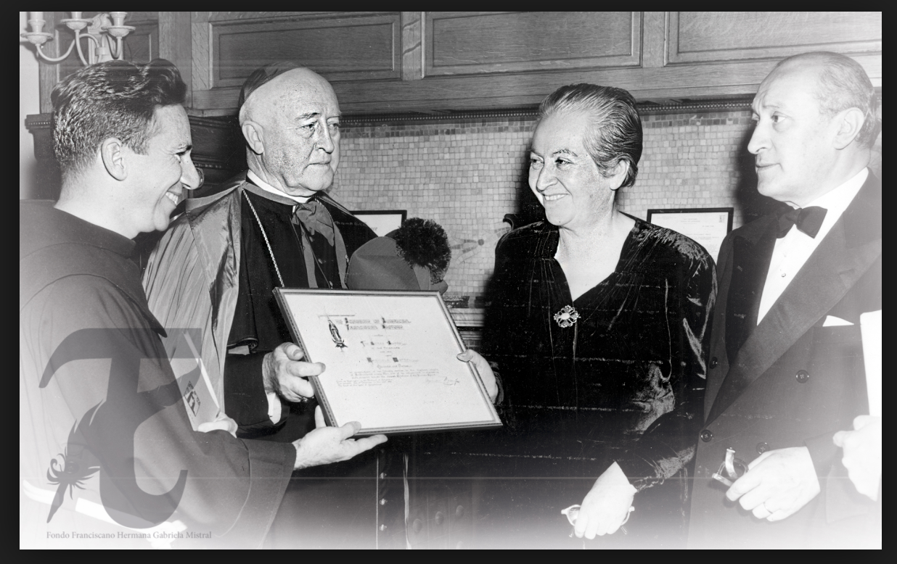

Premios Ganados Por Gabriela Mistral
1953.- Doctor «honoris causa» de la Universidad de California (Los Ángeles, Estados Unidos). 1951.- Premio Nacional de Literatura de Chile. 1951.- Doctor «honoris causa» de la Universidad de Chile. 1951.- Doctor «honoris causa» Universidad de Columbia (Estados Unidos). 1950.- Premio Anual de la Academia Norteamericana de la Historia Franciscana. 1947.- Doctor «honoris causa» por el Mills College of Oakland (California). 1946.- Doctor «honoris causa» de la Universidad de Florencia (Italia). 1946.- Medalla Enrique José Varona (Cuba). 1946.- Chevalier de la Legión d'honneur, Francia. 1945.- Premio Nobel de Literatura. 1931.- Doctor «honoris causa» de la Universidad de Guatemala. 1914.- Premio Flor Natural en los Juegos Florales de Santiago por «Sonetos de la muerte».
Premios Mas Importantes
Premio Nobel de la Literatura en 1945. Premio Nacional de Literatura de Chile en 1951.